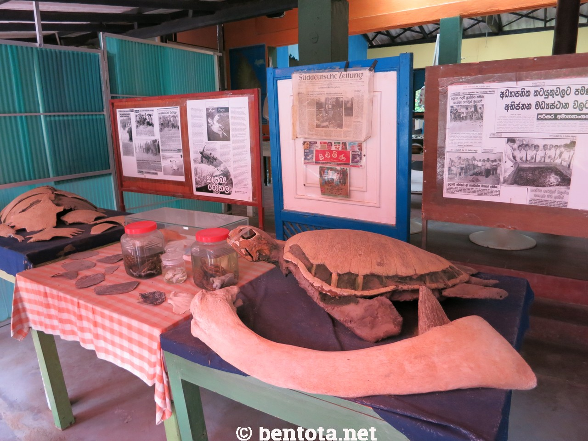
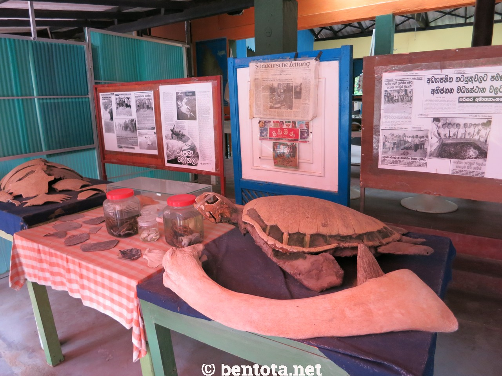

BENTOTA TURTLE HATCHERY
Explore a Turtle Hatchery in Bentota
If you're seeking an extraordinary experience that combines conservation, natural beauty, and an up-close encounter with awe-inspiring sea creatures, look no further than Bentota Turtle Hatchery in Sri Lanka. This sanctuary, nestled along the pristine shores of Bentota, offers a mesmerizing journey into the world of turtles, leaving visitors captivated and inspired.
From the moment you step foot into this enchanting haven, you'll be immersed in a remarkable conservation effort dedicated to the preservation and protection of these magnificent creatures. The passionate team of conservationists at Bentota Turtle Hatchery tirelessly works to ensure the survival of endangered turtle species, making it a haven of hope and an educational sanctuary for visitors.
Witnessing the delicate process of nesting, the careful incubation of eggs, and the release of hatchlings into the vast ocean is an experience that will stay with you forever. The dedication and commitment of the experts at the hatchery shine through as they educate and inspire visitors about the importance of turtle conservation.
Beyond the captivating turtles, the surroundings of Bentota Turtle Hatchery exude serenity and natural beauty. Picture yourself strolling along the golden sandy shores, feeling the warm sun on your skin, and listening to the soothing sounds of the ocean waves. It's a place where you can find solace, connect with nature, and be reminded of the incredible wonders our world holds.
Whether you are a nature lover, an adventure seeker, or simply curious about these incredible creatures, Bentota Turtle Hatchery welcomes you with open arms. Come join us in this remarkable journey of preservation, education, and appreciation of the magnificent turtles that grace the shores of Sri Lanka.Prepare to be mesmerized by the magic of Bentota Turtle Hatchery—a place where beauty, conservation, and the wonders of the ocean converge in perfect harmony.
What You Can Experience
- Turtle Hatchling Release & Turtle Feeding:
Participate in the heartwarming experience of releasing baby turtles into the ocean. Witness their tiny flippers propel them towards their natural habitat and feel the joy of contributing to their survival. Get up close and personal with the turtles during feeding sessions. Watch in awe as these graceful creatures glide through the water, gracefully consuming their nourishing meals. - Guided Tours:
Take a guided tour led by knowledgeable staff members who will provide insights into the different turtle species, their life cycles, and the conservation efforts undertaken at the hatchery. Learn about the challenges they face and discover ways to help protect these magnificent creatures. - Educational Exhibits:
Explore educational exhibits that showcase the life cycle of turtles, the threats they encounter, and the steps being taken to ensure their survival. Engage with informative displays and interactive materials that make learning about turtle conservation an enriching experience. - Beach Walks & Souvenir Shopping:
Take leisurely walks along the picturesque Bentota beach, where you can enjoy the tranquil surroundings, feel the sand beneath your toes, and marvel at the beauty of the coastal landscape.Browse through the hatchery's gift shop, where you can find a variety of turtle-themed souvenirs, including handicrafts, jewelry, clothing, and artwork. - Volunteer Opportunities:
If you're passionate about wildlife conservation, inquire about volunteer programs at the hatchery. Contribute your time and skills to support the conservation efforts and gain hands-on experience in protecting these remarkable creatures.
 


Researches about Bentota Turtle Hatchery
There're several researches done regarding the Bentota Turtle Hatchery.
- Sea turtle hatcheries in sri lanka: Their activities and potential contribution to sea turtle consrvation.
Click For More - Unregulated sea turtle hatcheries and management practices an ongoing concern in Sri Lanka
Click For More - Sea turtle hatcheries in sri lanka: An ex-situ conservation tool
Click For More